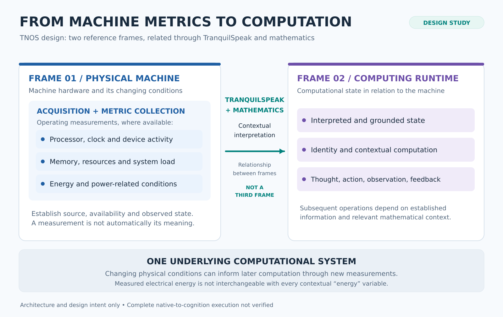

WORKING PRESENTATION · INVENTOR REVIEW PENDINGINTRODUCTION
PRESENTER READY
THE INTRODUCTION
An invention with a different foundation.
I'm Violet. This presentation introduces Jubi's Tranquility Neuro Operating System, why it began, what is being built, and what remains to be demonstrated.
Working TNOS Sponsors introduction · Part I · Not a demonstration of the native operating system
SOURCE / DESIGN
WEBSITE VISUALIZATION · NOT NATIVE EXECUTION
CUE REQUESTED→
CAPTION PENDING→
VISUAL PENDING
The visuals are conceptual explanations of TNOS architecture from the working sponsorship introduction. They are not actual hardware measurements, native cognition, or a live AI.